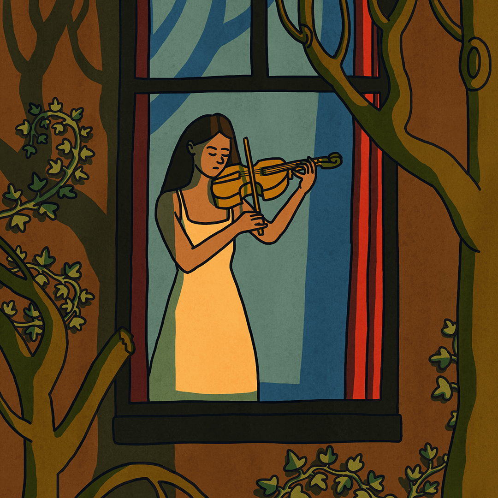

When you’re caught in depression, even your own home can feel like a cage, your own mind holding you captive.
But sometimes a small hobby, a simple act of creating or doing, can become a crack of light in that darkness.
In this illustration, the woman stands behind a window: a symbol of both distance and possibility.
It’s a reminder that even in the heaviest moments, there’s always a glimpse of the world beyond, and gentle ways to reach toward it.